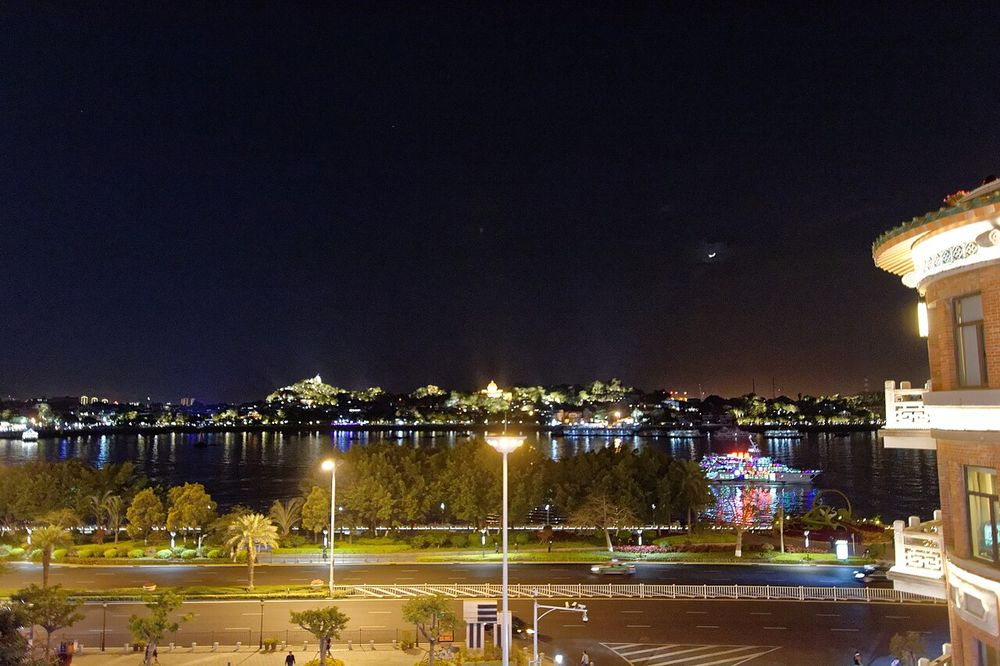
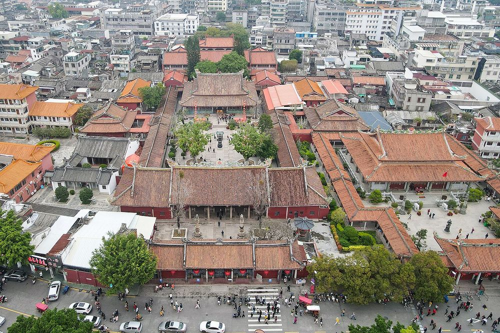
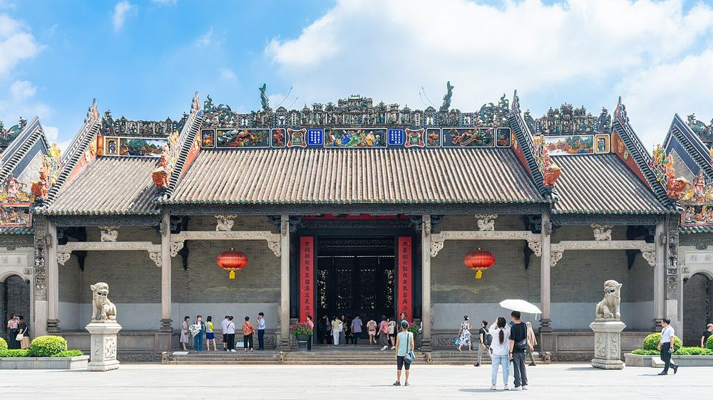

上海—广州沿海自驾
三周单程自驾，沿中国东南海岸南下：宁波的藏书楼和雁荡山的奇峰，温州、福州、厦门的海鲜港城，妈祖的湄洲岛和客家土楼，在潮汕从容住三晚，再经深圳到广州吃早茶。
- 天数
- 21 天
- 里程
- 约 2,070 公里
- 最佳季节
- 10 月下旬–11 月中旬
- 每人预算
- 约 CNY 12,350 起
2026 年 11 月为 2027 年 5 月下旬至 6 月中旬的行程所做的调研。开放时间、价格、渡轮和预约规则会变，出发前请再确认。车程和距离为估算，请以高德地图为准。
为什么选这条海岸线
一趟从容的自驾走完整个东南沿海，不走回头路，单段车程大多不超过两个半小时：开埠的宁波、雁荡山奇峰、福州老街巷、妈祖故乡湄洲岛、鼓浪屿、在世界遗产土楼旁住一晚、在潮州住三晚深入潮汕，最后到广州。几乎每天都换一种海鲜和小吃。
5 月下旬至 6 月中旬： 整条海岸都处在雨季。浙江一般 6 月上中旬入梅，福建雨季约从 5 月中旬到 6 月下旬，广东正值“龙舟水”最盛时。浙江白天约 27–30°C，往南 30–33°C，非常潮湿。6 月下旬前台风不多但有可能，台风会让海岛渡轮停航。2027 年端午节 6 月 9 日（周三）只放一天：福州浦下河、潮州韩江支流和广州各村（猎德、车陂）都有龙舟活动，日期一般 5 月下旬公布。
最佳季节： 10 月下旬至 11 月中旬最好：全年最干燥的时段，白天约 24–26°C，轮渡基本正常，潮汕膏蟹正当季；偶尔仍有晚台风，出发前几天看一下预报。3 月至 4 月中旬其次，生蚝最肥，但春季海雾可能导致停航。5 月下旬至 6 月中旬是龙舟水，全年雨最多的时段。避开 7–9 月（台风和湿热）、国庆黄金周、春节高峰，以及 11 月下旬至 2 月湄洲岛轮渡常因大风停航的季节。
路线： 上海 → 宁波 → 临海 → 雁荡山 → 温州 → 霞浦 → 福州 → 湄洲岛 → 莆田 → 厦门 → 南靖土楼 → 汕头 → 潮州 → 汕尾 → 深圳 → 广州（含佛山、顺德一日游），然后飞回。21 天单程，路线约 2,070 公里（含景点往返约 3,000 公里），每段车程最长约 2 小时 45 分，厦门、潮州、广州各住三晚。
亮点
- 中国现存最古老的私家藏书楼天一阁，和王澍设计的宁波博物馆
- 雁荡山灵峰夜景和大龙湫瀑布
- 福州三坊七巷，在佛跳墙的发源地吃佛跳墙
- 妈祖故乡湄洲岛和鼓浪屿的老别墅
- 在田螺坑、云水谣的客家土楼旁住一晚（世界遗产）
- 潮州古城、广济桥、工夫茶和潮汕牛肉火锅；汕头的侨批和华侨历史
- 广州早茶、烧鹅和陈家祠；佛山祖庙和醒狮，顺德双皮奶
须知
- 安排出发日避免周一落在博物馆日：周一或周六出发最好。宁波、温州、福建、厦门华侨、汕头和广东省的博物馆周一闭馆。
- 老年人优惠很常见（常见 60–69 岁半价、70 岁以上免费），但许多规定写的是凭中国身份证。带护照询问，预算按全价计。注意旅游保险的投保年龄上限。
- 多个景点有台阶或坡道（保国寺、临海城墙、鼓浪屿、妈祖祖庙、土楼、陈慈黉故居）。每天的行程卡里列有轻松的替代方案；带一辆轻便折叠轮椅，大型 MPV 后备箱放得下，不必依赖景区借用。
- 用护照提前预约：鼓浪屿船票（只在网上卖，约提前 15 天）、湄洲岛渡轮（凭护照在文甲码头窗口购买）、南普陀寺（最多 4 天）、广东省博物馆（最多 7 天）、南越王墓室（提前一天）。酒店常可代订船票。
- 湄洲岛和鼓浪屿的渡轮遇大风、台风会停航：前一晚确认，把厦门第三天留作调换日。
- 异地还车：还车费是最大的未知数（有的公司免收，有的接近 5,000 元）。按确切的上海取车、广州还车取得书面报价。
- 许多国家的护照现在可免签入境中国最多 30 天，请查询自己护照的规定。酒店入住时会为外国客人登记。
- 景点放在上午和 16:00 以后；中午高温和午后阵雨时休息或开车。
两种玩法
💰 最划算
- 住： 每座城市的“划算”选择，四星或平台同等级（见住宿）。
- 吃： 在评分好的平价老店吃地方特色。
- 每人约 CNY 12,350–17,150 元 （21 天，含租车，不含往返起终点的交通）。
✨ 最佳体验
- 住： 宁波、温州、福州的江景香格里拉，正对鼓浪屿的老牌鹭江宾馆，潮州韩江边的皇冠假日，以及沙面的白天鹅宾馆。
- 吃： 临海新荣记的海鲜午餐、福州聚春园的佛跳墙、汕头东海酒家的高档潮州海鲜，以及广州炳胜公馆的脆皮烧鹅。
- 每人约 CNY 17,490–24,850 元。
两种玩法路线和天数相同，只是住宿和餐饮不同。
路线地图
● 带序号：按顺序的住宿城市 ● 开车日途经的景点或午餐。 ● 从住地出发的一日游（虚线）。点击地点可看是第几天。 路线按 OpenStreetMap 路网绘制，仅供参考。
行程：21 天 20 晚
每个开车日要么只开一段（早出发，赶到目的地吃迟午餐，下午只看景点），要么分上午、下午两段，中间停下吃午餐。去景点的短途不计。
上午
🚗 上海 → 宁波 · 213 km · 2 小时 35
在上海取车，约 9:00 出发，走杭州湾跨海大桥。
午餐
宁波吃迟午餐：天一广场缸鸭狗的汤圆和小吃，或状元楼的经典宁波菜。
下午
中国现存最古老的私家藏书楼天一阁，以及旁边的月湖（周一天一阁 13:30 才开门）。晚上逛老外滩。天一阁地面平坦但门槛高，院子里有长椅。
上午
宁波博物馆，王澍用旧砖瓦砌成的建筑（免费，需分时预约；⚠️ 周一闭馆）。有电梯和空调，下雨天也合适。
午餐
午餐：状元楼（黄鱼汤、红烧鳗鱼）或天源巷的宁波家常菜。
下午
慢节奏的一天。保国寺大殿（1013 年）是华南最古老的木构建筑之一；要爬几段台阶，年长或腿脚不便者可只看下面的殿。或者休息，晚餐吃宁海海鲜。
上午
🚗 宁波 → 临海 · 137 km · 1 小时 40
约 9:00 出发。
午餐
临海：在紫阳街午餐（白塔桥饭店的台州家常菜、麦虾、麦饼）。然后看台州府城墙，只走江边一段：上山的一段台阶长而陡，年长或腿脚不便者可改为在平坦的一公里紫阳街散步。
下午
🚗 临海 → 雁荡山 · 90 km · 1 小时 10
入住、早点吃晚饭，然后看灵峰夜景：天黑后山峰化作剪影。约 1 公里，大体平坦但又黑又不平，带手电筒；观音洞要爬几百级台阶，可不去。
⚡ 充电 前一晚在酒店或出发前 （距上次充电约 273 km）
上午
🚗 雁荡山 → 温州 · 80 km · 1 小时
开门即去大龙湫（落差约 190 米，雨后最壮观）：约 1 公里的平缓步道，是雁荡山最适合老人的景点。约 11:30 出发。
午餐
温州吃迟午餐：五马街旁的长人馄饨，配附近摊档的灯盏糕和鱼丸。
下午
五马街和禅街，地势平坦的民国老街区。晚餐吃瓯菜海鲜。
⚡ 充电 今晚在酒店 （距上次充电约 327 km）
上午
二选一：楠溪江古村（芙蓉村和苍坡村，单程 47 分钟；地势平但多卵石，村与村之间开车）或温州博物馆（⚠️ 周一闭馆）。
午餐
在岩头村午餐，或在五马街吃小吃。
下午
约 15:00 回城休息。傍晚到江心屿：坐几分钟渡船（上船要下一级台阶），岛上是平坦的园路，晚上双塔亮灯；不必登塔。对岸是宋元海上丝绸之路遗址朔门古港遗址公园。
上午
🚗 温州 → 霞浦 · 167 km · 2 小时
约 8:30 出发，进入福建。这是开车时间最长的一天（合计约 4 小时，下雨更久）：每段中途进服务区休息，霞浦停留不要太久。
午餐
霞浦：在好万家市场的海鲜档午餐（敲螺、紫菜海蛎汤、清蒸大黄鱼）；鱼先称重报价再下锅。饭后到北岐滩涂可开车直达的观景点停 30–45 分钟（先查潮汐；有陡坡的小路就不走）。
下午
🚗 霞浦 → 福州 · 152 km · 1 小时 50
全天共约 3 小时 50 分车程，以午餐分成两段。傍晚到福州，休息。
⚡ 充电 在午餐地点 （距上次充电约 337 km）
上午
四个里只挑两个：三坊七巷（走南后街，进一两座老宅；老宅门槛高）加林则徐纪念馆；或福建博物院（⚠️ 周一闭馆；带护照）。
午餐
在三坊七巷的安泰楼午餐：佛跳墙、荔枝肉、鱼丸。早点去，避开旅行团。
下午
鼓山：坐索道上山，从涌泉寺附近乘景区车下山（不要走两千多级石阶）；或马尾的中国船政文化博物馆（⚠️ 周一闭馆，需网上预约）。晚餐到聚春园吃佛跳墙，或在酒店餐厅轻松吃。
上午
🚗 福州 → 文甲码头 · 128 km · 1 小时 35
约 8:00 出发。车停文甲码头（外地车不能上渡轮），坐船 15–20 分钟到湄洲岛，125 元含上岛门票。外国护照需在文甲码头窗口购票（微信预约要求中国身份证），留出排队时间。大风停航，前一晚确认。
午餐
在湄洲岛午餐：妈祖面、清蒸小海鲜、焖豆腐鱼。
下午
🚗 文甲码头 → 莆田 · 45 km · 40 分钟
坐岛上包车游妈祖祖庙（每车约 190 元，最多 12 人；岛太大，走不过来）。祖庙依山而建，台阶又长又多：年长或腿脚不便者可看大殿和下层院落，其他人登到山顶妈祖像。约 15:30 坐船回。晚餐在莆田吃红菇卤面、焖豆腐、兴化米粉。
⚡ 充电 在午餐地点 （距上次充电约 340 km）
上午
🚗 莆田 → 厦门 · 167 km · 2 小时
约 9:30 出发。
午餐
在中山路吃迟午餐：金家港的现点海鲜，或大中沙茶面。
下午
中山路（地势平；年长者可在鹭江道一端下车），再到沙坡尾和艺术西区，沿一段平坦栈道到演武大桥观景平台，远眺鼓浪屿。
上午
从东渡邮轮中心坐渡轮上鼓浪屿，约 9:00–10:00 出发，在三丘田上岸（往返 35 元）。船票实名、只在网上卖（“屿见厦门”小程序，约提前 15 天 9:00 放票；Klook 等代售可用护照），开售当天就把所有护照一起订好。岛上没有汽车、坡很多：如果电瓶观光车还在运营（约 50 元）就坐车，然后游海边的菽庄花园和龙头路。日光岩全程是陡台阶，可不去。
午餐
在鼓浪屿红砖老别墅里的那私厨午餐（清淡的蒸鱼、豆腐），或回岛外吃。
下午
趁最热之前回来休息。傍晚去南普陀寺（免费实名预约，最多提前 4 天）：殿宇依山层层升高，看完主殿即可，后山不必爬。
上午
集美学村（18 公里，20 分钟）：海边平坦的鳌园和陈嘉庚纪念馆（⚠️ 纪念馆周一闭馆）。或市区的华侨博物院（⚠️ 周一闭馆；带护照）。或者干脆休息、洗衣服。
午餐
在环岛路 308 号的临家闽南菜午餐：鸡汤面线、姜母鸭、海蛎煎。开门不久就要排队。
下午
下午避暑休息，傍晚开车兜环岛路看日落（不必走路）。晚餐在白鹭洲舒友海鲜。
上午
🚗 厦门 → 田螺坑 · 137 km · 1 小时 50
约 9:00 出发。在山坡观景台看田螺坑土楼群（“四菜一汤”，世界遗产）。下到楼群的小路陡而多台阶：年长或腿脚不便者可留在观景台。
午餐
在塔下或云水谣附近吃迟午餐：客家家常菜（盐焗鸡、梅菜扣肉、溪鱼）。
下午
先到塔下（10 分钟）走平坦的溪边小巷、看宗祠，再到云水谣（22 分钟）：大榕树、怀远楼、和贵楼。只看底层，楼上回廊是陡木梯。天黑前到达：最后一段是盘山路。
⚡ 充电 前一晚在酒店或出发前 （距上次充电约 312 km）
上午
🚗 云水谣 → 汕头 · 220 km · 2 小时 40
早上在云水谣散步，约 9:30 出发。
午餐
汕头：迟午餐吃潮汕鲜牛肉火锅（福合埕或八合里）。
下午
🚗 汕头 → 潮州 · 42 km · 40 分钟
小公园开埠区，1920–30 年代的骑楼街（平坦；车停在外围）。侨批文物馆收藏了九万多封海外华侨寄回家乡的侨批（⚠️ 2026 年调整过开放时间，可能周一闭馆，请先查），开埠文化陈列馆就在约 100 米外。然后去潮州；晚餐在古城边的潮膳楼。
⚡ 充电 前一晚在酒店或出发前 （距上次充电约 177 km）
上午
澄海前美村（34 公里，30 分钟）：陈慈黉故居，20 世纪初海外商人家族建造的大宅，500 多间房，中西合璧。门槛和台阶很多：年长或腿脚不便者可只看主体“善居室”，中途坐下休息。
午餐
在汕头午餐：春梅里卤鹅，或再吃一顿牛肉火锅。
下午
东部海滨的潮汕历史文化博览中心（有电梯）：下南洋、侨批和非遗集中在一处（⚠️ 其中的潮汕华侨历史博物馆周一闭馆）。或者到老村落参观一座宗祠。潮汕是许多海外华人的祖籍地；各地侨联和志愿者团体可协助寻根，请提前一两个月联系。约 45 分钟回潮州。
⚡ 充电 今晚在酒店 （距上次充电约 282 km）
上午
早上逛古城：开元寺（唐代，免费，7:00 开门）、牌坊街，再到广济桥（约 10:00 开放，20 元；先确认开放，曾因维修关闭）。桥很长，中段浮桥傍晚会解开；年长或腿脚不便者可在广济门城楼或江边步道观看。
午餐
在古城午餐：东门街阿彬牛肉火锅，或十八曲鱼饺。
下午
中午避暑休息（可洗衣）。然后去龙湖古寨（27 公里，30 分钟；约 1.5 公里平坦街巷，可在中段下车），或城里的己略黄公祠看金漆木雕。到茶馆喝工夫茶；晚上若有剧团演出可看潮剧（问酒店）。晚餐吃卤鹅。
上午
🚗 潮州 → 汕尾 · 195 km · 2 小时 25
约 9:30 出发，中途在服务区休息一次。
午餐
汕尾吃迟午餐：星河湾酒店的粤式烧鹅和点心，或逸林酒店的海鲜；两家停车充电都方便。
下午
海边休息的下午。傍晚去凤山妈祖：品清湖边山上 16.8 米高的石雕妈祖像；如允许就开车到上面的停车场，不必爬山。
⚡ 充电 前一晚在酒店或出发前 （距上次充电约 180 km）
上午
🚗 汕尾 → 深圳（蛇口） · 178 km · 2 小时 10
约 9:30 出发。
午餐
在南山吃迟午餐：潮香四海的潮汕家常菜，或粤式点心。
下午
蛇口海上世界平坦的海滨和“明华轮”，再到隔壁的设计互联（有电梯和空调，展览常换）。体力允许可去华侨城创意文化园。在海边吃晚饭。（深圳博物馆周一闭馆。）
⚡ 充电 前一晚在酒店或出发前 （距上次充电约 215 km）
上午
🚗 深圳 → 广州 · 118 km · 1 小时 35
约 9:30 出发。
午餐
在永庆坊附近吃迟午餐：陶陶居（1880 年创立）或泮溪酒家的园林茶楼，饭后到南信吃双皮奶。
下午
陈家祠，即广东民间工艺博物馆（院落平坦，有门槛），然后逛永庆坊和恩宁路骑楼。晚饭后从广州塔码头上船夜游珠江（坐室内座位，不必爬到顶层），或上广州塔（全程电梯；室内观景层曾对 75 岁以上免费，带护照询问）。
上午
南越王博物院，两千多年前的王墓：丝缕玉衣在上层展厅；墓室需前一天另约分时段，要走台阶和坡道下去，年长或腿脚不便者可不下。（周一闭馆。王宫展区免费但需预约；王墓展区 10 元。）也可改去广东省博物馆（周一闭馆；免费实名预约，最多提前 7 天；全馆有电梯）：一天一座大博物馆就够了。
午餐
在南越王博物院附近的北园酒家吃点心午餐，广州三大园林酒家之一（若去省博，就在对面的炳胜品味）。
下午
休息（可洗衣），傍晚去沙面：平坦、林荫、无车的老租界街道。晚餐吃烧鹅。
⚡ 充电 今晚在酒店 （距上次充电约 346 km）
上午
🚗 广州 → 佛山（祖庙） · 25 km · 35 分钟
约 9:00 出发。佛山祖庙，雕饰华丽的岭南庙宇，现为博物馆：院落平坦，08:30–18:00，门票 20 元。免费醒狮武术表演 10:00、14:15、15:30（每场约 40 分钟，下雨取消），提前约 40 分钟找长凳坐。表演馆曾闭馆维修，当天先看“佛山市祖庙博物馆”公众号。然后在祖庙后面修复的老街区岭南天地走一走。下雨时可改去 5 分钟车程外的梁园，地面平坦，部分有廊。
午餐
在岭南天地的大良毋米粥午餐（顺德粥底火锅、均安鲮鱼饼）。
下午
🚗 佛山 → 顺德（清晖园） · 37 km · 40 分钟
大良的清晖园，广东四大名园之一：大部分平坦、有树荫，少数地方有汀步和窄廊（5–10 月 09:00–18:00，17:00 停止入园；门票 15 元）。然后步行到附近的民信或仁信吃双皮奶：顺德是联合国教科文组织“美食之都”。体力允许可加逢简水乡（13 公里）：6 人包一条大船游水道（250 元，约 40 分钟）；从停车场走过去要 1 公里以上石板路，先把长辈送到游客中心。回广州 40–55 公里，约 45–60 分钟。
上午
早茶，然后还车（电动车通常须充到取车时电量的 90% 以上）。
午餐
去机场前在前进路园林式的南园酒家吃点心当午餐。
下午
飞回上海：空中约 2 小时 20 分，单程 570–900 元（不在预算内）。带行李坐飞机比 6 个半小时的高铁轻松；需要时可向航空公司申请轮椅协助。
自驾与充电
- 在中国开车需要中国驾照。外国游客可凭护照和驾照翻译件到车管所办理临时驾驶许可（最长 3 个月）；国际驾照不被认可。
- 第二司机：长途单程自驾最好有两位司机。每位司机都要有自己的中国驾照或临时驾驶许可（在租车公司所在城市办理，须在出发前办好），并写进租车合同，否则保险可能不赔。
- 租车：取得一份书面报价，写明具体车型、21 天总价、里程上限与超里程费、押金与预授权、保险免赔额、第二司机费用、ETC 过路费结算、充电卡、边境区域限制及故障换车规则。部分公司把 7–27 天按周租计价，而非月租。
- 手机和支付：抵达后凭护照办一张中国 +86 手机卡（多数充电和预约 App 需要国内号码），保留本国号码接收银行验证码。出发前用外卡开通支付宝和微信支付并小额测试；微信外卡账户在完成实名认证前单笔上限 3,000 元、每年 15,000 元。另备第二张卡和少量现金。
- 理想超充：单枪 5C 桩只服务理想及通过认证的高压车型；双枪桩和 2C 桩对符合国标的新能源车开放，可用支付宝或微信扫码支付。
- 按 2024 年全国规定，酒店不得以无涉外资质为由拒绝接待境外人员，但小城前台执行不一：请书面确认六本护照、三间房、大型 MPV 停车和是否有充电桩。
- 车型：大型六座电动 MPV，如理想 MEGA、极氪 009 或腾势 D9。MEGA 和 009 是纯电，续航长、充电快（MEGA 在主要高速上有理想自建超充站）。D9 还有插电混动（DM-i）版本，有燃油备用，偏远路段最稳妥。用车机导航或高德的充电桩图层规划补电，每晚到酒店时留足第二天早上的电量。
- 沿海高速充电很方便：到 2026 年全国约 99% 的高速服务区有充电桩。服务区价格一般每度 1.6–2.0 元，节假日下午会排队，尽量在城市或酒店过夜充电。
- 本路线列明有充电桩的酒店包括温州华侨饭店和香格里拉、福州香格里拉、莆田秀屿假日酒店、厦门宾馆、土楼的凌波格兰云天、潮州漫心酒店、深圳雅庭酒店和白天鹅宾馆；预订时请确认。
- 去雁荡山和土楼的最后一段是盘山路：天黑前到达。腾势 D9 DM-i 有燃油备用，完全不用担心续航。
- 异地还车：一嗨宣传免异地还车费（但异地订单的基础租金可能更高）；神州按距离和车型收取约 500–4,827 元。在各家 App 按确切的上海取车、广州还车询价；电动车还车电量须达到取车时的 90% 以上，否则收充电服务费。
- 湄洲岛：外地车不能上渡轮。车停文甲码头（每小时约 2 元，24 小时最多 30 元，露天停车场）。
- 过路费：多数高速每公里约 0.45 元，广东六车道以上高速 0.60 元；杭州湾跨海大桥约 80 元。租赁车通常装有 ETC，过路费事后结算。端午节高速不免费。
- 过路费： CNY 850–1,050 (ETC)
- 总里程：约 2,130 公里。
整车交通费用 估算。过路费：高速里程按小客车每公里 0.40–0.60 元。充电：大型电动 MPV 每百公里 22–26 度电，公共快充每度 1.2–1.8 元（酒店或谷时更便宜）。租车费另计。
| 整车 | 每人（6 人） | |
|---|---|---|
| 里程 | 2,940 km (路线 2,130 + 景点往返 810); 高速约 1,810 km | |
| 高速过路费 | CNY 720–1,090 | CNY 120–180 |
| 充电 (650–760 kWh) | CNY 780–1,380 | CNY 130–230 |
| 合计 | CNY 1,500–2,460 | CNY 250–410 |
| 单程租车含异地还车费（估算） | CNY 11,000–23,800 | CNY 1,830–3,970 |
| 若租腾势 D9 DM-i 并以燃油为主（6.6–7.1 升/百公里，按每升 8 元假设） | CNY 1,550–1,670 | CNY 260–280 |
满载 MPV 的保守情景：每百公里 24–30 度，即 710–880 kWh, CNY 850–1,590 元（整车）。过路费可用 ETC 或人工车道缴纳，备好银行卡或现金。
⚡ 充电计划 按每 350 公里左右至少补一次电、到站保留 20–30% 电量规划：六座 MPV 满载、高速、开空调时，实际续航远低于标称。尽量在午餐地点（快充 30–45 分钟）或晚上在酒店附近充电，当天用高德或运营商 App 确认站点状态；不要只凭酒店写的“有充电桩”。350 公里只是复查补能的提示点，不保证到时有可用快充：每个补电点都备一个不同运营商的备用站，偏远路段尤其如此。
| 天 | 地点 | 距上次充电 |
|---|---|---|
| 3 | 宁波 (前晚或早上) | 273 km |
| 4 | 温州 (晚上) | 327 km |
| 6 | 霞浦 (午餐时) | 337 km |
| 8 | 在湄洲岛午餐 (午餐时) | 340 km |
| 12 | 厦门 (前晚或早上) | 312 km |
| 13 | 云水谣（土楼） (前晚或早上) | 177 km |
| 14 | 潮州 (晚上) | 282 km |
| 16 | 潮州 (前晚或早上) | 180 km |
| 17 | 汕尾 (前晚或早上) | 215 km |
| 19 | 广州 (晚上) | 346 km |
必去景点









宁波
临海
- 台州府城墙和紫阳街: “江南长城”；上山段台阶陡，江边一段和一公里长的紫阳街平坦。 ? · 55–60 元 · Qunar 购票即用；紫阳街免费
雁荡山
温州
霞浦
- 霞浦滩涂（北岐）: 以竹竿和海带养殖闻名的滩涂；日出日落、潮位合适时最美。部分观景点要走陡坡。 24 h · 免费 · 免费；先查潮汐
福州
湄洲岛
- 妈祖祖庙: 海神妈祖的祖庙，依山层层而上，山顶有 14 米高的妈祖像。 ~07:30–17:30 · 上岛门票含在 125 元船票内，外国护照在文甲码头窗口购买
厦门
- 鼓浪屿 UNESCO: 无车小岛，满是老别墅和花园；不收上岛费，海边的菽庄花园（30 元起）最轻松。 ~07:10–18:40 · 30 元 · 船票实名，只在网上卖（“屿见厦门”），约提前 15 天
- 南普陀寺: 依五老峰而建的闽南寺院；紧邻厦门大学。 ~08:00–17:30 · 免费 · 免费实名预约，最多提前 4 天
- 中山路、沙坡尾和艺术西区: 骑楼商业街和由旧渔港改成的艺术区，平坦栈道通往演武大桥观景平台。 10:00–22:00 · 免费
- 集美学村: 华侨领袖陈嘉庚兴建的学村、鳌园和纪念馆，位于平坦的海边。 09:00–17:00 · 休：Mon (周一) · 免费 · 嘉庚公园免费
南靖土楼
- 田螺坑土楼群 UNESCO: 四座圆楼加一座方楼的“四菜一汤”，在山坡观景台看最好；下去的路很陡。 08:30–17:30 · 90 元 · 现场购票；2027 年价格待确认
- 云水谣、怀远楼、和贵楼 UNESCO: 有大榕树的溪边古镇和两座精美土楼；是最平坦的土楼区。 08:30–17:30 · 90 元 · 现场购票；按规定 60–69 岁半价、70 岁以上免费（可能要求中国身份证）
- 洪坑（永定，可选） UNESCO: “土楼王子”振成楼所在的溪边村落，地势平坦，离云水谣 28 分钟。 06:30–21:00 · 90 元 · 盖章后可多日使用
汕头
- 小公园开埠区: 老开埠区 1920–30 年代的骑楼街；核心区平坦。 24 h · 免费
- 侨批文物馆: 收藏九万多封侨批，即海外华侨寄回家乡的书信和汇款，讲述潮汕华侨的故事。 ? · 休：Mon? (周一) · 可能免费
- 潮汕历史文化博览中心: 现代展馆，讲下南洋、侨批和非遗，包括潮汕华侨历史博物馆（48 元起）；有电梯。 09:00–17:00 · 休：Mon (周一) · 48 元 · 线上预约表单要求填身份证号：请提前致电或请酒店协助用护照预约
- 陈慈黉故居: 澄海前美村的大宅，建于 20 世纪初，500 多间房，由海外商人家族兴建；门槛和台阶很多。 08:30–17:30 · 40 元 · 价格为估算；以携程为准
潮州
汕尾
- 凤山妈祖: 品清湖边山上 16.8 米高的石雕妈祖像。上山台阶多：年长或腿脚不便者可在山脚广场等候。 08:00–18:00 · 免费
深圳
广州
- 陈家祠: 19 世纪 90 年代的陈氏书院，现为广东民间工艺博物馆，以雕刻闻名；院落平坦。 09:00–18:00 · 休：Tuesdays (周二) · 10 元 · 微信公众号或现场扫码
- 沙面: 老租界小岛，榕树下的欧式建筑；平坦、林荫、无车。 24 h · 免费
- 永庆坊和恩宁路: 修复后的西关街巷和骑楼；周末人多。 24 h · 免费
- 广州塔: 600 米高塔；室内观景层曾对 75 岁以上免费（带护照询问）。 09:30–22:30 · 89 元 · 团购 89 元起
- 珠江夜游: 在广州塔码头上船；坐室内，不必爬到顶层。 ~18:30–23:40 · 88–110 元 · 普通船；露天顶层和自助餐船更贵
佛山
- 佛山祖庙: 雕饰华丽的岭南庙宇，现为博物馆；院落平坦。免费醒狮武术表演 10:00、14:15、15:30（下雨取消）。 08:30–18:00 (last entry 17:30) · 20 元 · 去哪儿或祖庙博物馆公众号；65 岁以上凭中国身份证或老人优待证免费，按全价预算
顺德
展览
- 沿线所有博物馆: 2027 年展览尚未公布 2026 年 11 月查询：沿线博物馆都尚未公布 2027 年展览。国内博物馆一般提前一到三个月公布，请在四五月查看各馆微信公众号。
- 深圳设计互联: 与 V&A 合作展厅的轮换设计展 2027 年尚未公布；部分展览收费。
- 宁波博物馆: 一楼特展 2026 年有良渚玉器和清代外销艺术等展；2027 年尚未公布。部分特展收费。
- 汕头侨批文物馆: 侨批常设展 九万多封侨批；可询问能否按姓氏或村名查找。
- 大多数博物馆只会提前几周公布 2027 年夏季展览，届时会更新本节。
博物馆
| 博物馆 | 开放时间 | 休馆 | 门票 |
|---|---|---|---|
| 宁波博物馆 宁波 | 09:00–17:00 (Sat–Sun 09:00–21:00) | Mon (周一) | 0 微信或官网免费分时预约 |
| 温州博物馆 温州 | 09:00–17:00 | Mon (周一) | 0 散客无需预约 |
| 福建博物院 福州 | 09:00–17:00 | Mon (周一) | 0 预约规则说法不一：尽量在微信预约；带护照 |
| 中国船政文化博物馆 福州（马尾） | 09:00–17:00 | Mon (周一) | 0 需网上提前预约；每日限约 2,000 人 |
| 华侨博物院 厦门 | 09:00–18:00 | Mon (周一) | 0 未见预约要求；需护照 |
| 陈嘉庚纪念馆 厦门（集美） | 09:00–17:00 | Mon (周一) | 0 |
| 侨批文物馆（汕头市档案馆） 汕头 | ? | Mon? (周一) | 0? 可能免费 |
| 开埠文化陈列馆 汕头 | ? | Mon? (周一) | 0? |
| 潮汕华侨历史博物馆 汕头 | 09:00–17:00 | Mon (周一) | 48 |
| 汕头市博物馆 汕头 | ? | Mon (周一) | 0 |
| 颐陶轩潮州窑博物馆 潮州 | ? | 请先致电 | |
| 深圳博物馆 深圳 | 10:00–18:00 | Mon (周一) | 0 以微信公众号为准 |
| 广东省博物馆 广州 | 09:00–17:00 | Mon (周一) | 0 微信实名预约，最多提前 7 天，22:00 放号；入馆出示预约护照 |
| 南越王博物院 广州 | 09:00–17:30 | Mondays (周一) | 10 王宫展区免费，需微信预约；王墓 10 元；墓室下层需另行预约 |
中国大多数博物馆周一闭馆，免费参观也需用护照实名预约。
吃什么
每站都有午餐和晚餐选择。标签为对应平台的评分和评论数，多为携程（满分 5 分；4.5 以上且 150 条以上评论为我们的标准）。大众点评评分未出现在搜索结果中，且其拦截自动访问，故未采用。低于标准的店仅在沿途没有更好选择时保留，并加注明。2026 年 11 月读取；价格为人均。
宁波
- 午餐: 缸鸭狗（天一广场店） 携程 4.6 · 1274 条: 宁波汤圆、点心和小吃；快捷午餐. 30–50 元
- 午餐: 状元楼（和义路店） 携程 4.6 · 514 条: 18 世纪老字号宁波菜：雪菜大汤黄鱼、红烧鳗鱼. 124 元
- 晚餐: 宁海食府（天一阁望京店） 携程 4.8 · 151 条: 宁海风味海鲜. 197 元 · 11:00–13:30, 17:00–20:30
- 晚餐: 石浦饭店（天一店） 携程 4.6 · 192 条: 石浦渔港海鲜，现点现做.
临海
- 午餐: 白塔桥饭店（紫阳街旁） 携程 5.0 · 43 条 (低于 4.5 或评论较少): 台州家常菜；麦虾、蛋清羊尾. 69 元
- 午餐: 杜记麦饼（台州府路） 携程 5.0 · 104 条 (低于 4.5 或评论较少): 麦饼，适合快速垫肚子. 21 元
- 午餐: 新荣记（临海总店） 携程 4.9 · 14 条 (低于 4.5 或评论较少): 米其林餐厅集团的临海创始店：台州海鲜，人均约 460–1,100 元的大餐；需订位，离古城开车约 10 分钟.
雁荡山
- 午餐: 雁荡山·桃源农庄（能仁村，近大龙湫） (低于 4.5 或评论较少): 农家菜：野生溪鳗、溪鱼、螺蛳. 30 元
- 晚餐: 舌尖上的雁荡 携程 5.0 · 23 条 (低于 4.5 或评论较少): 雁荡本地菜和江南家常菜.
- 晚餐: 好望角食府 携程 4.9 (低于 4.5 或评论较少): 本地鱼鲜和海鲜. 78 元
温州
- 午餐: 长人馄饨（解放街，五马街旁） 携程 4.8 · 310 条: 经典温州馄饨；可配附近摊档的鱼丸和灯盏糕. 24 元
- 午餐: 扁头灯盏糕（五马街） 携程 4.8 · 150 条: 灯盏糕，再到隔壁吃米面. 15–30 元
- 晚餐: 新东山海鲜（白鹿里店） 携程 4.7 (低于 4.5 或评论较少): 瓯菜海鲜；点鱼丸汤. 151 元
- 晚餐: 阿外楼大酒店（南站店） 携程 4.7 · 42 条 (低于 4.5 或评论较少): 老字号温州菜，适合围桌宴席.
霞浦
- 午餐: 新美味园·海鲜夜档（好万家市场总店） 携程 4.5 · 17 条 (低于 4.5 或评论较少): 敲螺、紫菜海蛎汤、清蒸大黄鱼；每天早上现采购. 95 元
- 午餐: 新金城·平价海鲜大排档（同市场） 携程 5.0 · 23 条 (低于 4.5 或评论较少): 清蒸花鲈、葱爆鱿鱼；先称重报价. 121 元
福州
- 午餐: 安泰楼（三坊七巷店，吉庇巷 1 号） 携程 4.5 · 480 条: 佛跳墙（小份约 78 元）、荔枝肉、手打鱼丸、海蛎煎；早点去. 98 元
- 午餐: 老福洲·三十年福州味（斗东店） 携程 4.6 · 77 条 (低于 4.5 或评论较少): 佛跳墙、荔枝肉、醉排骨、鱼丸. 91 元
- 晚餐: 福邸中餐厅（福州洲际酒店） 携程 4.9 · 108 条 (低于 4.5 或评论较少): 佛跳墙、鸡汤汆海蚌、荔枝肉；有电梯、空调和包间. 141 元
- 晚餐: 闽筵1984（悦华酒店三坊店） 携程 4.9 · 36 条 (低于 4.5 或评论较少): 古田鸭锅、荔枝肉、闽菜宴席. 141 元
- 晚餐: 聚春园 (低于 4.5 或评论较少): 佛跳墙发源地，国家级非遗：每盅约 300–400 元；请确认分店.
湄洲岛和莆田
- 午餐: 岛上海景酒店或郡雅酒店餐厅 (低于 4.5 或评论较少): 妈祖面、清蒸小海鲜、焖豆腐鱼（莆田美食指南推荐）.
- 晚餐: 老蒲鲜·地标·非遗美食（一中总店） 携程 4.7 · 31 条 (低于 4.5 或评论较少): 红菇卤面、焖豆腐、兴化炒米粉、荔枝肉；免费停车. 89–120 元
- 晚餐: 秀屿假日酒店餐厅或后海渔村 (低于 4.5 或评论较少): 南日鲍和野生海鱼；渔家土灶饭（均在莆田美食指南中）.
厦门
- 午餐: 金家港海鲜大排档（中山路店） 携程 4.9 · 826 条: 现点现做海鲜、海蛎煎. 90 元
- 午餐: 大中沙茶面 携程 4.5 · 207 条: 沙茶面. 25–30 元
- 午餐: 那私厨·红砖老别墅（鼓浪屿安海路 59 号） 携程 5.0 · 252 条: 清淡家常菜：蒸鱼、豆腐. 55 元
- 午餐: 临家闽南菜（环岛路 308 号） 携程 4.6 · 678 条: 鸡汤面线、姜母鸭、海蛎煎；海边. 70 元 · 11:00–21:30
- 晚餐: 舒友海鲜（白鹭洲一号） 携程 4.6 · 186 条: 宽敞好进出的海鲜酒楼. 100 元
- 晚餐: TANGYAN 1988（中山路） 携程 5.0 (低于 4.5 或评论较少): 闽菜和闽南菜.
南靖土楼
汕头
- 午餐: 福合埕牛肉火锅（长平国信店） 携程 4.7 · 190 条: 潮汕鲜牛肉火锅，牛肉丸出名. 82 元
- 午餐: 八合里海记（总店） 携程 4.6 · 293 条: 最知名的潮汕牛肉火锅连锁. 90 元
- 午餐: 春梅里卤鹅馆（中山路店） 携程 4.3 · 42 条 (低于 4.5 或评论较少): 卤鹅拼盘、鹅肝. 85 元
- 晚餐: 东海酒家（长平路 123 号） 携程 4.8 · 44 条 (低于 4.5 或评论较少): 经典高档潮州海鲜，人均约 890 元的大餐.
潮州
- 午餐: 阿彬牛肉火锅（广济桥店，东门街） 携程 4.3 · 100 条 (低于 4.5 或评论较少): 古城里的牛肉火锅. 80 元
- 午餐: 十八曲老尾鱼饺 携程 4.4 · 25 条 (低于 4.5 或评论较少): 鱼饺和鱼面；快捷. 25 元
- 晚餐: 潮膳楼（东门街 22 号） 携程 4.7 · 320 条: 潮州菜、生腌海鲜、砂锅粥；距广济桥 200 米. 79 元
- 晚餐: 刘卜卤鹅（上西平路 245 号总店） 携程 4.8 · 20 条 (低于 4.5 或评论较少): 卤鹅（69 元）、拼盘（130 元）. 67 元 · 09:00–22:00
- 晚餐: 枫春海鲜大排档 携程 4.7 · 26 条 (低于 4.5 或评论较少): 蚝烙、蒸鱼、砂锅菜. 103 元
汕尾
- 午餐: 汕尾星河湾酒店·真粤中餐厅 携程 4.8 · 9 条 (低于 4.5 或评论较少): 烧鹅和点心；停车充电方便. 98 元
- 晚餐: 保利希尔顿逸林·青雅中餐厅 携程 4.4 · 18 条 (低于 4.5 或评论较少): 粤式海鲜. 151 元
深圳
- 午餐: 潮香四海（南山大道） 携程 4.6 · 69 条 (低于 4.5 或评论较少): 潮汕家常菜、蚝烙. 98 元
- 午餐: 凤凰楼（华强北） 携程 4.6 · 316 条: 经典粤式点心. 132 元
- 晚餐: 国贸旋转餐厅（49 楼） 携程 4.7 · 102 条 (低于 4.5 或评论较少): 粤菜，俯瞰罗湖，所在大楼是 1992 年南方谈话的地点. 119 元
广州
- 午餐: 南园酒家（前进路） 携程 4.5 · 449 条: 园林酒家；点心. 98 元
- 午餐: 北园酒家（小北路） 携程 4.5 · 267 条: 三大园林酒家之一；近南越王博物院. 189 元
- 午餐: 炳胜品味（珠江新城） 携程 4.6 · 507 条: 黑叉烧；在广东省博物馆对面. 129 元
- 午餐: 陶陶居（第十甫路） 携程 4.2 · 683 条 (低于 4.5 或评论较少): 1880 年创立的茶楼，有“百年烧鹅”；近永庆坊. 103 元
- 晚餐: 广州喜来登·采悦轩 携程 4.7 · 242 条: 性价比高的酒店粤菜、烧鹅. 122 元
- 晚餐: 炳胜公馆（珠江新城） 携程 4.6 · 383 条: 脆皮烧鹅；人均约 420 元的大餐.
佛山和顺德（第 20 天）
- 午餐: 大良毋米粥·粥底火锅（佛山岭南天地店） 携程 4.5 · 295 条: 粥底火锅、牛展、均安鲮鱼饼、炒陈村粉. 115 元
- 午餐: 寻味顺德·南记酒家（大良广源路店） 携程 4.9 · 18 条 (低于 4.5 或评论较少): 椒盐九肚鱼、盐焗奄仔蟹、顺德鱼生、拆鱼羹；可订座.
- 甜品: 民信老铺（东乐路店，近清晖园） 携程 4.5 · 390 条: 双皮奶、姜撞奶、炸牛奶. 13 元
- 甜品: 仁信老铺（华盖路步行街） 携程 4.6 · 259 条: 椰子炖双皮奶、莲子双皮奶. 13 元
购物
- 天一广场和老外滩 (宁波): 宁波汤圆和小吃，江边酒吧咖啡馆。 ~10:00–22:00
- 五马街 (温州): 小吃（灯盏糕、鱼丸、汤圆）和老字号店铺。 24 h
- 三坊七巷南后街 (福州): 茉莉花茶、脱胎漆器、寿山石雕、鱼丸和花生汤。 ~09:00–22:00
- 中山路 (厦门): 花生汤、绿豆饼、海味干货和闽南茶叶。 24 h
- 小公园 (汕头): 潮汕小吃、牛肉丸和橄榄菜等伴手礼。 ~08:30–21:00
- 牌坊街和枫溪陶瓷区 (潮州): 凤凰单丛茶、手拉壶、潮绣和老字号糕点；可请酒店联系参观手拉壶作坊。 ~09:00–22:00
- 永庆坊和恩宁路 (广州): 西关街巷里的广府手工艺、铜器和糖水。 ~10:00–22:00
住宿
每座城市两个选择：划算（四星或平台同等级；平台等级不等于官方星级）和最佳体验。酒店不应拒绝外国客人，但请书面确认可为 6 本外国护照登记、并有大型 MPV 车位。价格为每间每晚（人民币），为 2026 年 11 月查到的 2027 年 6 月初价格；尚无报价的为一般价格。
| 城市 | 💰 划算 | ✨ 体验 |
|---|---|---|
| 宁波 2 晚 | 宁波温德姆至尊豪廷大酒店 Booking.com /10, 264 reviews 8.9 CNY 587 · 步行可到月湖和天一阁；免费停车。请确认充电桩（和义路的万豪有）。 | 宁波香格里拉大酒店 Booking.com /10, 247 reviews 8.9 CNY 974 · 位于三江交汇处江边；有无障碍客房和扶手。 |
| 雁荡山 1 晚 | 雁荡山山庄 Ctrip /5, 225 reviews 4.3 CNY ~520 · 价格为估算。老牌四星（2018 年翻新），步行约 20 分钟到灵峰夜景。请书面确认可接待外籍护照客人。 | 雁荡山灵湫酒店 Ctrip /5, 701 reviews 4.7 CNY 478–528 · 价格为估算。2024 年开业；山景房和泳池，到灵峰和大龙湫 10–15 分钟。请确认可用外籍护照入住。请书面确认可接待外国护照：同区有酒店明确不接待外宾。 |
| 温州 2 晚 | 温州华侨饭店 Booking.com /10, 70 reviews 8.2 CNY 618 · 老牌酒店；步行到五马街和江心屿渡口。楼龄较老：请确认电梯。 | 温州香格里拉大酒店 Booking.com /10, 114 reviews 8.9 CNY 909 · 江边，开车约 10 分钟到五马街。 |
| 福州 2 晚 | 福州美居酒店 Trip.com /10, 4,405 reviews 9.6 CNY 390 · 性价比高；大型 MPV 请要求地面车位。 | 福州香格里拉大酒店 Trip.com /10, 10,340 reviews 9.2 CNY 622 · 步行 15 分钟到三坊七巷，开车 3 分钟到福建博物院；有米其林星级中餐厅。 |
| 莆田 1 晚 | 莆田秀屿假日酒店 Trip.com /10, 1,355 reviews 9.7 CNY 407 · 离湄洲岛渡口最近的舒适酒店；酒店餐厅省去岛上回来后再开车。 | 莆田香格里拉大酒店 Trip.com /10, 1,677 reviews 9.4 CNY 1487 · 在市区，靠近卤面和焖豆腐餐馆。 |
| 厦门 3 晚 | 厦门宾馆 Booking.com /10, 203 reviews 8.8 CNY 515 · 花园式国宾馆，距中山路约 1.5 公里；有无障碍设施和扶手。鼓浪屿渡轮在北边 6–7 公里的东渡。 | 厦门鹭江宾馆 Trip.com /10, 3,956 reviews 9.6 CNY ~1,210 · 老牌酒店：厦门第一座高楼，正对鼓浪屿，顶楼有观海餐厅。 |
| 南靖土楼（云水谣） 1 晚 | 凌波格兰云天国际酒店（云水谣店） Trip.com /10, 2,089 reviews 9.3 CNY ~900 · 价格为估算。2023 年开业，有电梯和独立卫浴；接待外国客人。土楼里的客栈多为陡木梯、常是公用卫浴。 | 凌波格兰云天国际酒店（云水谣店） Trip.com /10, 2,089 reviews 9.3 CNY ~900 · 价格为估算。同一家：唯一有电梯的舒适选择。想要特色可选塔下的和榕庄（Booking.com 9.6，每晚约 313 元），有独立卫浴；请要求一楼房间。 |
| 潮州 3 晚 | 潮州古城牌坊街漫心酒店 Booking.com /10, 2 reviews (Ctrip 4.7/5) 9.5 CNY 676 · 步行到牌坊街和广济桥；Booking 评论少，但携程评分好。 | 潮州腾瑞皇冠假日酒店 Booking.com /10, 102 reviews (Ctrip 4.6/5) 8.7 CNY 990 · 可看古城和广济桥的江景。 |
| 汕尾 1 晚 | 汕尾保利希尔顿逸林酒店 CNY ~500 · 价格为估算；尚未读到评分。酒店的青雅中餐厅午晚餐都方便。 | 汕尾星河湾酒店 CNY ~700 · 价格为估算；尚未读到评分。真粤中餐厅有烧鹅和点心。 |
| 深圳 1 晚 | 雅庭酒店（海岸城店） Booking.com /10, 98 reviews 8.7 CNY 340 · 简洁，去蛇口方便。 | 蛇口海上世界 Grade 酒店 Booking.com /10, 174 reviews 8.5 CNY 618 · 步行到海上世界和设计互联。 |
| 广州 3 晚 | 广州宾馆 Booking.com /10, 705 reviews 8.7 CNY 485 · 老牌涉外酒店，在江边，去永庆坊和南越王博物院都方便。 | 白天鹅宾馆 Booking.com /10, 702 reviews 9.1 CNY 1047 · 广州地标性的江景酒店，位于无车的沙面岛。 |
预算
每人 21 天费用，六人住三间、合租一辆车，不含往返起终点的交通。
- 💰 最划算： 约 CNY 12,350–17,150
住宿 5,440–6,260 + 租车 1,830–3,970 + 充电和过路费 250–410 + 餐饮 3,730–5,070 + 门票 760–1,000 + 必需的景区交通 330–450 - ✨ 最佳体验： 约 CNY 17,490–24,850
住宿 9,470–10,920 + 租车 1,830–3,970 + 充电和过路费 250–410 + 餐饮 4,850–8,110 + 门票 760–1,000 + 必需的景区交通 330–450 - 必需的景区交通： 湄洲岛渡轮含上岛门票（125 元）、岛上包车（每车 190 元，分摊）、鼓浪屿往返船票（35 元）和电瓶车（50 元）、鼓山索道往返（70 元）、雁荡山景区车（40 元）；每人约 330–450 元。
- 计算方法：住宿按每晚所选酒店的调研价格（6 人住 3 间）；餐饮按所列餐厅的午餐加晚餐 (平均约 CNY 80 午餐, 120 晚餐，每人)；门票按所列景点；过路费和充电按上面的里程计算。
未包含
- 到上海起点的交通，以及从广州飞回的机票（约 2 小时 20 分，570–900 元）
- 早餐（除非房价已含）
- 自选项目：竹筏、讲解、其他索道、岛上观光车、珠江夜游、广州塔观景层和演出等景点票价以外的费用
- 酒店、码头和景点停车费（每次约 10–30 元；文甲码头每天最多 30 元）
- 租车押金和信用卡预授权、额外保险或免赔、增加驾驶员费用
- 旅游和医疗保险（注意年龄上限）
- 如需要：折叠轮椅
- 手机流量或 eSIM、洗衣、小费
- 购物和纪念品（茶叶、茶壶、海味干货）
- 涨价：节假日或周末加价，以及现在到出行期间的价格变化
- 若租插混车：油费（见交通费用表）
- 租车可能的额外费用：电动车还车电量低于取车时约 90% 的充电服务费、里程上限、充电超时占位费、违章、清洁费
- 因暴雨、台风、渡轮停航或景点关闭导致的改期改线
- 途中饮用水和零食
- 建议另留 10–15% 机动金
酒店价格为快照，租车为估算。区间代表本指南中较便宜与较贵的选择。
季节须知
- 雨水：整条海岸都在雨季。浙江一般 6 月上中旬入梅；福州 6 月平均降雨约 230 毫米，厦门 6 月是全年最湿的月份；广东“龙舟水”（5 月下旬到 6 月下旬）平均约 320 毫米。常有午后暴雨：上午安排户外，下午去博物馆。
- 炎热：宁波、温州白天约 27–30°C，福州、厦门 30–32°C，潮汕、深圳、广州 31–35°C，湿度约 80%，体感常超过 38°C。带水、帽子和伞，中午休息。
- 台风：中国每年首个登陆台风平均在 6 月下旬，6 月中旬以前登陆不常见但有可能。台风会带来一到三天的景点关闭和渡轮停航；可调换海岛日（湄洲岛、鼓浪屿），关注中国气象局预报。
- 山区站点（雁荡山、土楼）暴雨时容易塌方、封路；大龙湫雨后最壮观，但大雨时灵峰夜景看不清。
- 2027 年端午节只放一天，没有长周末，交通比往常轻松；当天赛龙舟的地方人多、会封路。厦门集美的龙舟赛往年在节前约两周，福州浦下河邀请赛在节前一两天，潮州在韩江支流、广州各村的龙舟景在节日前后。各地 5 月下旬公布日期。节前一晚的酒店要早订。
- 妈祖诞辰的湄洲岛大型祭典在 2027 年 4 月下旬，在行程之前；届时只有日常朝拜和周末进香团。
- 2027 年端午为 6 月 9 日（放假一天）。若约 5 月 22 日出发，在广州的几天正好赶上：车陂、猎德的龙舟招景可在岸边免费观看。2027 年具体日程一般提前一两个月公布。
信息来源
查询日期：2026 年 11 月。尽量采用官方网站；酒店评分和价格来自 Booking.com 或携程；餐厅评分来自携程（未采用大众点评）；车程为估算，2026 年 11 月 26 日经 Kimi 联网核查（对照 OSRM 路网）并修正了偏差超过 15% 的路段。所有内容均以我们自己的话整理。 调研方法 →
- Qunar: Tianyi Pavilion · Qunar: Baoguo Temple · Qunar: Yandang · Qunar: Taizhou Fu wall · Qunar: Jiangxin Islet · Qunar: Nanxi River · Ningbo Museum · People’s Daily: Shuomen port park (2026) · Trip.com restaurants: Ningbo · Trip.com restaurants: Wenzhou · Trip.com restaurants: Linhai · Ctrip hotel: Lingqiu Hotel · Ctrip hotel: Yandangshan Villa · Ctrip: Xiapu sights · Ctrip restaurants: Xiapu · Ctrip restaurants: Fuzhou · Fuzhou Bendibao: China Shipping Culture Museum · The Paper: Meizhou ferry booking (2026) · Qunar: Meizhou Island · Putian dining guide (2026) · Gulangyu ferries · Xiamen government: city travel tips · Trip.com: Gulangyu guide · Trip.com restaurants: Xiamen · Fujian government: Overseas Chinese Museum · Trip.com: Lingbo Grand Skylight · Ctrip: tulou scenic area · Dahepiao: tulou ticket policy · Ctrip restaurants: Chaozhou · Ctrip restaurants: Shantou · Ctrip restaurants: Shanwei · Ctrip restaurants: Shenzhen · Ctrip restaurants: Guangzhou · Qunar: Guangji Bridge · Chinanews: Shantou qiaopi archive (2025) · Dahepiao: Chaoshan Overseas Chinese History Museum · Ctrip: Chen Cihong residence · Shenzhen government: Shenzhen Museum · Bendibao: Design Society · Guangzhou Bendibao: Guangdong Museum · Guangzhou Bendibao: Nanyue King Museum · Yangcheng Evening News: Chen Clan Hall · Dahepiao: Canton Tower · Guangdong toll standard · Zhejiang DoT: Hangzhou Bay Bridge tariff · gov.cn: expressway charging (2026) · Sina: one-way car hire · Shanghai government: temporary driving permit · Xinhua: 2027 public holidays · Yangcheng Evening News: dragon-boat water · JMA: Fuzhou climate normals · JMA: typhoon averages · Guangzhou Bendibao: dragon-boat gatherings · Fujian Daily: Fuzhou dragon boats (2025) · OSRM routing
- 照片（Wikimedia Commons，自由授权）: 南靖田螺坑土楼群 (照片: Windmemories, CC BY-SA 4.0) · 宁波天一阁 (照片: Mx. Granger, CC0) · 雁荡山 (照片: Glasreifen, CC BY-SA 4.0) · 从厦门中山路望鼓浪屿 (照片: Slyronit, CC BY-SA 4.0) · 潮州广济桥 (照片: Akira CA, CC BY-SA 4.0) · 潮州开元寺 (照片: Windmemories, CC BY-SA 4.0) · 广州陈家祠 (照片: Shujianyang, CC BY-SA 4.0)